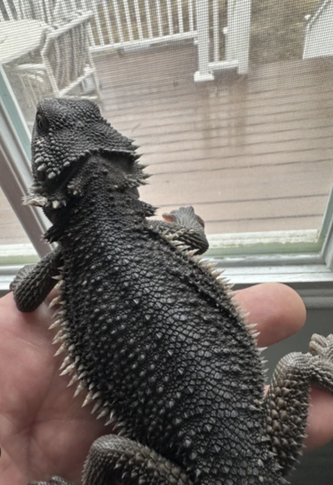
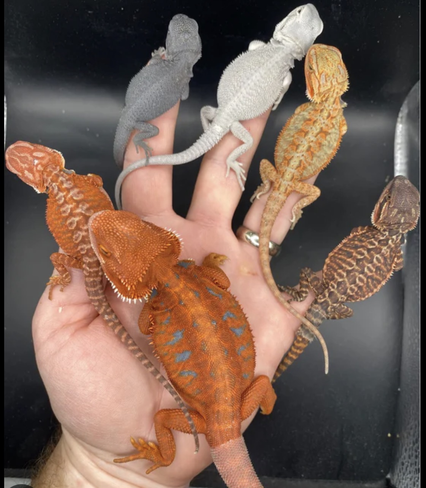

Bearded dragons are a type of lizard that come from Australia. They live in dry areas like deserts and rocky places. They get their name from the spiky skin under their chin that looks like a beard. When they feel scared or want to show off, they can puff out this beard to look bigger. This makes them seem more dangerous to predators or other animals. People think this behavior is really interesting to watch. It is one of the main reasons they are called “bearded” dragons. Bearded dragons have a wide, flat body and a triangle-shaped head. Their bodies are covered in small, rough scales that help protect them. They also have spikes around their beard that make them look tougher. Their colors are usually brown, tan, or sandy, which helps them blend into their environment. This camouflage keeps them safe from predators. Another cool thing is that their beard can change color. When they are upset or threatened, it can turn very dark, sometimes almost black. Bearded dragons also use body language to communicate with others. They might bob their heads up and down or wave one of their arms slowly. These movements can mean different things, like showing dominance or being friendly. They also have very good eyesight and can see movement from far away. This helps them stay alert and avoid danger. On the top of their head, they have something called a “third eye” that can sense changes in light.


